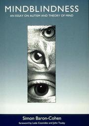

Mindblindness: An Essay on Autism and Theory of Mind
Book·Simon Baron-Cohen, 1995·心盲：论孤独症与心理理论

Baron-Cohen argues that one of the core difficulties in autism is trouble "reading minds," and presents his model of theory-of-mind modules.
- Author
- Simon Baron-Cohen
- Year
- 1995
- Difficulty
- Intermediate
- Kind
- Primary text
- Schools
- Theory of Mind
- Core theories
- Mindblindness Hypothesis
Editions
- English edition Mindblindness: An Essay on Autism and Theory of Mind Simon Baron-Cohen · MIT Press, first edition · 1995 Open Library ↗